Learning Module 2 Time Value of Money in Finance - Part 1: Introduction
Volume 1: Quantitative Methods
Learning Module 2 Time Value of Money in Finance
Part 1/4: Introduction (PDF Pages 53–67)
Tập 1: Phương pháp Định lượng (Volume 1: Quantitative Methods)
Học phần 2: Giá trị Thời gian của Tiền trong Tài chính (Learning Module 2: Time Value of Money in Finance)
Phần 1/4: Giới thiệu (Introduction) (Trang PDF 53–67)
L E A R N I N G M O D U L E
H Ọ C P H Ầ N (L E A R N I N G M O D U L E)
2
2
Time Value of Money in Finance
Giá trị Thời gian của Tiền trong Tài chính (Time Value of Money in Finance)
LEARNING OUTCOMES
MỤC TIÊU HỌC TẬP (LEARNING OUTCOMES)
- Mastery The candidate should be able to: calculate and interpret the present value (PV) of fixed-income and equity instruments based on expected future cash flows calculate and interpret the implied return of fixed-income instruments and required return and implied growth of equity instruments given the present value (PV) and cash flows explain the cash flow additivity principle, its importance for the no-arbitrage condition, and its use in calculating implied forward interest rates, forward exchange rates, and option values
- Mức độ thành thạo (Mastery) – Ứng viên cần có khả năng:
- tính toán và diễn giải giá trị hiện tại (present value – PV) của các công cụ thu nhập cố định (fixed-income instruments) và công cụ vốn chủ sở hữu (equity instruments) dựa trên các dòng tiền dự kiến trong tương lai;
- tính toán và diễn giải tỷ suất sinh lợi ngầm định (implied return) của các công cụ thu nhập cố định cùng với tỷ suất sinh lợi yêu cầu (required return) và tốc độ tăng trưởng ngầm định (implied growth) của các công cụ vốn chủ sở hữu khi biết trước giá trị hiện tại (PV) và các dòng tiền;
- giải thích nguyên lý cộng dòng tiền (cash flow additivity principle), tầm quan trọng của nó đối với điều kiện không có kinh doanh chênh lệch giá (no-arbitrage condition), và ứng dụng của nó trong việc tính toán lãi suất kỳ hạn ngầm định (implied forward interest rates), tỷ giá hối đoái kỳ hạn (forward exchange rates) và giá trị quyền chọn (option values).
INTRODUCTION
GIỚI THIỆU (INTRODUCTION)
This learning module applies time value of money principles in valuing financial assets. The first lesson focuses on solving for the present value of expected future cash flows associated with bonds and stocks. In the second lesson, the focus shifts to solving for implied bond and stock returns given current prices. This includes solving for and interpreting implied growth rates associated with given stock prices. The final lesson introduces cash flow additivity, an important principle which ensures that financial asset prices do not allow investors to earn risk-free profits, illustrated with several examples. The material covered in this learning module provides an important foundation for candidates in understanding how financial assets are priced in markets.
Học phần này áp dụng các nguyên lý giá trị thời gian của tiền (time value of money) vào việc định giá các tài sản tài chính. Bài học đầu tiên tập trung vào việc giải tìm giá trị hiện tại của các dòng tiền dự kiến trong tương lai gắn liền với trái phiếu và cổ phiếu. Trong bài học thứ hai, trọng tâm chuyển sang việc giải tìm tỷ suất sinh lợi ngầm định của trái phiếu và cổ phiếu khi biết trước mức giá hiện hành. Nội dung này bao gồm việc giải tìm và diễn giải các tốc độ tăng trưởng ngầm định gắn liền với mức giá cổ phiếu đã cho. Bài học cuối cùng giới thiệu tính cộng dòng tiền (cash flow additivity), một nguyên lý quan trọng đảm bảo rằng giá của các tài sản tài chính không cho phép các nhà đầu tư kiếm được lợi nhuận phi rủi ro (risk-free profits), được minh họa bằng một số ví dụ cụ thể. Nội dung được đề cập trong học phần này cung cấp một nền tảng quan trọng giúp các ứng viên hiểu được cách thức định giá các tài sản tài chính trên thị trường.
LEARNING MODULE OVERVIEW
TỔNG QUAN HỌC PHẦN (LEARNING MODULE OVERVIEW)
-
The price of a bond is the sum of the present values of the bond’s promised coupon payments and its par value. For discount bonds, the price reflects only the present value of the bond’s par value.
-
The value of a stock should reflect the sum of the present values of the stock’s expected future dividends in perpetuity.
-
Giá của một trái phiếu bằng tổng giá trị hiện tại của các khoản thanh toán tiền lãi định kỳ (coupon payments) đã cam kết và mệnh giá (par value) của trái phiếu đó. Đối với trái phiếu chiết khấu (discount bonds), mức giá chỉ phản ánh giá trị hiện tại của mệnh giá trái phiếu.
-
Giá trị của một cổ phiếu phải phản ánh tổng giá trị hiện tại của các khoản cổ tức dự kiến trong tương lai của cổ phiếu đó kéo dài đến vĩnh viễn (in perpetuity).
-
Stock valuation models are classified by the expected growth pattern assumed for future dividends: (1) no growth, (2) constant growth, or (3) changing dividend growth.
-
If a bond’s price is known, the bond’s implied return can be computed using the bond’s price and its promised future cash flows.
-
A stock’s required return can be estimated given the stock’s current price and assumptions about its expected future dividends and growth rates.
-
A stock’s implied dividend growth rate can be estimated given the stock’s current price and assumptions about its expected future dividends and required return.
-
If valuing two (or more) cash flow streams, the cash flow additivity principle allows for the cash flow streams to be compared (as long as the cash flows occur at the same point in time).
-
Application of cash flow additivity allows for confirmation that asset prices are the same for economically equivalent assets (even if the assets have differing cash flow streams).
-
Several real-world applications of cash flow additivity are used to illustrate no-arbitrage pricing.
-
Các mô hình định giá cổ phiếu được phân loại theo mô hình tăng trưởng dự kiến được giả định cho cổ tức trong tương lai: (1) không tăng trưởng (no growth), (2) tăng trưởng không đổi (constant growth), hoặc (3) tăng trưởng cổ tức thay đổi (changing dividend growth).
-
Nếu biết trước giá của một trái phiếu, tỷ suất sinh lợi ngầm định (implied return) của trái phiếu đó có thể được tính bằng cách sử dụng giá trái phiếu và các dòng tiền cam kết trong tương lai của nó.
-
Tỷ suất sinh lợi yêu cầu (required return) của một cổ phiếu có thể được ước tính khi biết giá hiện hành của cổ phiếu cùng các giả định về cổ tức dự kiến và tốc độ tăng trưởng trong tương lai của nó.
-
Tốc độ tăng trưởng cổ tức ngầm định (implied dividend growth rate) của một cổ phiếu có thể được ước tính khi biết giá hiện hành của cổ phiếu cùng các giả định về cổ tức dự kiến trong tương lai và tỷ suất sinh lợi yêu cầu của nó.
-
Khi định giá hai (hoặc nhiều) chuỗi dòng tiền, nguyên lý cộng dòng tiền (cash flow additivity principle) cho phép so sánh các chuỗi dòng tiền với nhau (miễn là các dòng tiền phát sinh tại cùng một thời điểm).
-
Việc áp dụng nguyên lý cộng dòng tiền cho phép xác nhận rằng giá tài sản là như nhau đối với các tài sản tương đương về mặt kinh tế (economically equivalent assets) (ngay cả khi các tài sản đó có các chuỗi dòng tiền khác nhau).
-
Một số ứng dụng thực tế của nguyên lý cộng dòng tiền được sử dụng để minh họa cho việc định giá không có kinh doanh chênh lệch giá (no-arbitrage pricing).
2
2
TIME VALUE OF MONEY IN FIXED INCOME AND EQUITY
GIÁ TRỊ THỜI GIAN CỦA TIỀN TRONG CÔNG CỤ THU NHẬP CỐ ĐỊNH VÀ VỐN CHỦ SỞ HỮU (TIME VALUE OF MONEY IN FIXED INCOME AND EQUITY)
calculate and interpret the present value (PV) of fixed-income and equity instruments based on expected future cash flows
tính toán và diễn giải giá trị hiện tại (present value – PV) của các công cụ thu nhập cố định và công cụ vốn chủ sở hữu dựa trên các dòng tiền dự kiến trong tương lai
The timing of cash flows associated with financial instruments affects their value, with cash inflows valued more highly the sooner they are received. The time value of money represents the trade-off between cash flows received today versus those received on a future date, allowing the comparison of the current or present value of one or more cash flows to those received at different times in the future. This difference is based upon an appropriate discount rate r as shown in the prior learning module, which varies based upon the type of instrument and the timing and riskiness of expected cash flows.
Thời điểm phát sinh của các dòng tiền gắn liền với các công cụ tài chính ảnh hưởng đến giá trị của chúng, trong đó các dòng tiền vào (cash inflows) được định giá càng cao khi chúng được nhận về càng sớm. Giá trị thời gian của tiền thể hiện sự đánh đổi giữa các dòng tiền nhận được ngày hôm nay so với những dòng tiền nhận được vào một ngày trong tương lai, cho phép so sánh giá trị hiện hành hay giá trị hiện tại của một hoặc nhiều dòng tiền với những dòng tiền nhận được tại các thời điểm khác nhau trong tương lai. Sự khác biệt này dựa trên một mức lãi suất chiết khấu (discount rate) phù hợp $r$ như đã trình bày trong học phần trước, vốn thay đổi tùy theo loại công cụ cũng như thời điểm và mức độ rủi ro của các dòng tiền dự kiến.
In general, the relationship between a current or present value ( PV ) and future value ( FV ) of a cash flow, where r is the stated discount rate per period and t is the number of compounding periods, is as follows:
Tổng quát, mối quan hệ giữa giá trị hiện hành hay giá trị hiện tại ($\text{PV}$) và giá trị tương lai ($\text{FV}$) của một dòng tiền, trong đó $r$ là lãi suất chiết khấu công bố mỗi kỳ và $t$ là số kỳ ghép lãi, được biểu diễn như sau:
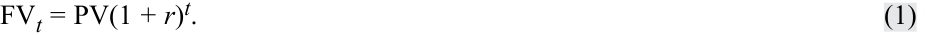
If the number of compounding periods t is very large, that is, t →∞, we compound the initial cash flow on a continuous basis as follows:
Nếu số kỳ ghép lãi $t$ rất lớn, nghĩa là $t \to \infty$, chúng ta ghép lãi dòng tiền ban đầu trên cơ sở liên tục (continuous basis) như sau:
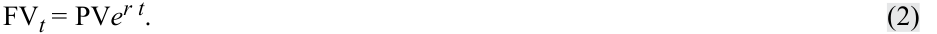
Conversely, present values can be expressed in future value terms, which requires recasting Equation 1 as follows:
Ngược lại, giá trị hiện tại có thể được biểu diễn theo giá trị tương lai, đòi hỏi phải biến đổi lại Phương trình 1 như sau:
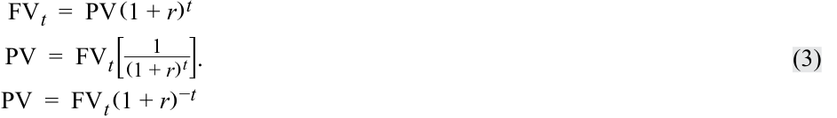
The continuous time equivalent expression of Equation 3 is as follows: PV t = FV e−r t .
Biểu thức tương đương theo thời gian liên tục (continuous time equivalent expression) của Phương trình 3 như sau:
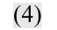
Fixed-Income Instruments and the Time Value of Money
Các Công cụ Thu nhập Cố định và Giá trị Thời gian của Tiền (Fixed-Income Instruments and the Time Value of Money)
Fixed-income instruments are debt instruments, such as a bond or a loan, that represent contracts under which an issuer borrows money from an investor in exchange for a promise of future repayment. The discount rate for fixed-income instruments is an interest rate, and the rate of return on a bond or loan is often referred to as its yield-to-maturity (YTM).
Các công cụ thu nhập cố định (fixed-income instruments) là các công cụ nợ, chẳng hạn như trái phiếu (bond) hoặc khoản vay (loan), đại diện cho các hợp đồng theo đó tổ chức phát hành vay tiền từ nhà đầu tư để đổi lấy lời hứa hoàn trả trong tương lai. Lãi suất chiết khấu đối với các công cụ thu nhập cố định là một mức lãi suất, và tỷ suất sinh lợi của một trái phiếu hoặc khoản vay thường được gọi là lợi suất đáo hạn (yield-to-maturity – YTM) của nó.
Cash flows associated with fixed-income instruments usually follow one of three general patterns:
Các dòng tiền gắn liền với các công cụ thu nhập cố định thường tuân theo một trong ba mô hình tổng quát sau:
-
Discount: An investor pays an initial price ( PV ) for a bond or loan and receives a single principal cash flow ( FV ) at maturity. The difference ( FV − PV ) represents the interest earned over the life of the instrument.
-
Periodic Interest: An investor pays an initial price ( PV ) for a bond or loan and receives interest cash flows ( PMT ) at pre-determined intervals over the life of the instrument, with the final interest payment and the principal ( FV ) paid at maturity.
-
Level Payments: An investor pays an initial price ( PV ) and receives uniform cash flows at pre-determined intervals ( A ) through maturity which represent both interest and principal repayment.
-
Chiết khấu (Discount): Nhà đầu tư trả một mức giá ban đầu ($\text{PV}$) cho một trái phiếu hoặc khoản vay và nhận lại một dòng tiền nợ gốc duy nhất ($\text{FV}$) khi đáo hạn. Phần chênh lệch ($\text{FV} - \text{PV}$) đại diện cho tiền lãi kiếm được trong suốt vòng đời của công cụ.
-
Tiền lãi định kỳ (Periodic Interest): Nhà đầu tư trả một mức giá ban đầu ($\text{PV}$) cho một trái phiếu hoặc khoản vay và nhận được các dòng tiền lãi ($\text{PMT}$) theo các khoảng thời gian đã định trước trong suốt vòng đời của công cụ, với khoản thanh toán tiền lãi cuối cùng và nợ gốc ($\text{FV}$) được chi trả khi đáo hạn.
-
Thanh toán đều (Level Payments): Nhà đầu tư trả một mức giá ban đầu ($\text{PV}$) và nhận được các dòng tiền đồng nhất theo các khoảng thời gian đã định trước ($A$) cho đến khi đáo hạn, bao gồm cả tiền lãi và tiền trả nợ gốc.
Discount Instruments
Công cụ chiết khấu (Discount Instruments)
The discount cash flow pattern is shown in Exhibit 1:
Mô hình dòng tiền chiết khấu được thể hiện trong Bảng 1 (Exhibit 1):
Exhibit 1: Discount Bond Cash Flows
Bảng 1: Dòng tiền của Trái phiếu Chiết khấu (Exhibit 1: Discount Bond Cash Flows)
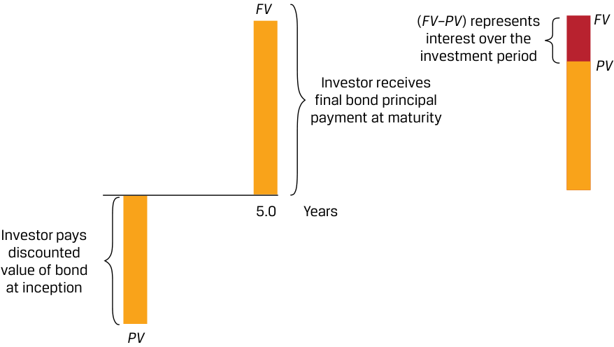
Chú thích hình ảnh: Tại thời điểm khởi đầu, nhà đầu tư trả giá trị chiết khấu của trái phiếu ($\text{PV}$). Sau $5,0$ năm (khi đáo hạn), nhà đầu tư nhận được khoản thanh toán nợ gốc trái phiếu cuối cùng ($\text{FV}$). Chênh lệch ($\text{FV} - \text{PV}$) đại diện cho tiền lãi trong suốt giai đoạn đầu tư.
The present value ( PV ) calculation for a discount bond with principal ( FV ) paid at time t with a market discount rate of r per period is:
Phép tính giá trị hiện tại ($\text{PV}$) cho một trái phiếu chiết khấu với nợ gốc ($\text{FV}$) được thanh toán tại thời điểm $t$ và lãi suất chiết khấu thị trường là $r$ mỗi kỳ như sau:
PV (Discount Bond) = FVt / (1 + r )t . ~~(5)~~
(Tiếng Anh: $\text{PV}(\text{Discount Bond}) = \text{FV}_t / (1 + r)^t$)
The investor’s sole source of return is the difference between the price paid ( PV ) and full principal ( FV ) received at maturity. This type of bond is often referred to as a zero-coupon bond given the lack of intermediate interest cash flows, which for bonds are generally referred to as coupons.
Nguồn sinh lợi duy nhất của nhà đầu tư là phần chênh lệch giữa mức giá đã trả ($\text{PV}$) và toàn bộ số nợ gốc ($\text{FV}$) nhận được khi đáo hạn. Loại trái phiếu này thường được gọi là trái phiếu không trả lãi định kỳ (zero-coupon bond) do không có các dòng tiền lãi trung gian — vốn thường được gọi là tiền lãi coupon (coupons) đối với trái phiếu.
EXAMPLE 1
VÍ DỤ 1 (EXAMPLE 1)
Discount Bonds under Positive and Negative Interest Rates
Trái phiếu chiết khấu dưới Môi trường Lãi suất Dương và Âm (Discount Bonds under Positive and Negative Interest Rates)
While most governments issue fixed coupon bonds with principal paid at maturity, for many government issuers such as the United States, United Kingdom, or India, investors buy and sell individual interest or principal cash flows separated (or stripped) from these instruments as discount bonds. Consider a single principal cash flow payable in 20 years on a Republic of India government bond issued when the YTM is 6.70 percent. For purposes of this simplified example, we use annual compounding, that is, t in Equation 5 is equal to the number of years until the cash flow occurs.
Mặc dù hầu hết các chính phủ phát hành trái phiếu có lãi suất coupon cố định với nợ gốc được thanh toán khi đáo hạn, nhưng đối với nhiều tổ chức phát hành chính phủ như Hoa Kỳ, Vương quốc Anh hoặc Ấn Độ, các nhà đầu tư mua và bán các dòng tiền lãi hoặc dòng tiền gốc riêng lẻ đã được tách rời (separated hay stripped) từ các công cụ này dưới dạng trái phiếu chiết khấu. Xét một dòng tiền nợ gốc duy nhất phải trả sau 20 năm của một trái phiếu chính phủ Cộng hòa Ấn Độ được phát hành khi lợi suất đáo hạn (YTM) là $6,70\%$. Vì mục đích của ví dụ đơn giản hóa này, chúng ta sử dụng ghép lãi hàng năm, nghĩa là $t$ trong Phương trình 5 bằng số năm cho đến khi dòng tiền phát sinh.
- What should an investor expect to pay for this discount bond per INR100 of principal?
- Nhà đầu tư kỳ vọng phải trả bao nhiêu cho trái phiếu chiết khấu này trên mỗi $100\text{ INR}$ nợ gốc?
Solution:
Lời giải (Solution):
INR27.33
$27,33\text{ INR}$
We solve for PV given r of 6.70 percent, t = 20, and FV20 of INR100 using Equation 5:
PV = INR100 / (1 + 0.067)20 = INR27.33.
Chúng ta giải tìm $\text{PV}$ khi biết $r = 6,70\%$, $t = 20$, và $\text{FV}_{20} = 100\text{ INR}$ bằng cách sử dụng Phương trình 5:
We may also use the Microsoft Excel or Google Sheets PV function:
~~= PV (rate, nper, pmt, FV, type),~~
where:
Chúng ta cũng có thể sử dụng hàm PV trong Microsoft Excel hoặc Google Sheets:
rate = the market discount rate per period,
=PV(rate, nper, pmt, FV, type)
nper = the number of periods,
trong đó:
pmt = the periodic coupon payment (zero for a discount bond),
FV = future or face value, and
-
rate = lãi suất chiết khấu thị trường mỗi kỳ,
-
nper = số kỳ,
-
pmt = khoản thanh toán coupon định kỳ (bằng 0 đối với trái phiếu chiết khấu),
-
FV = giá trị tương lai hoặc mệnh giá (face value), và
-
type = các khoản thanh toán được thực hiện vào cuối kỳ (0 như trong trường hợp này) hoặc đầu kỳ (1) của mỗi kỳ.
type = payments made at the end (0 as in this case) or beginning (1) of each period.
Vì là một dòng tiền ra (hoặc mức giá phải trả), kết quả hàm PV của Excel mang dấu âm, vì vậy:
As a cash outflow (or price paid), the Excel PV solution has a negative sign, so:
PV = (27.33) = ~~PV (0.067,20,0,100,0)~~ .
While the principal ( FV ) is a constant INR100, the price ( PV ) changes as both time passes, and interest rates change.
Trong khi nợ gốc ($\text{FV}$) là một hằng số bằng $100\text{ INR}$, thì mức giá ($\text{PV}$) sẽ thay đổi khi thời gian trôi qua và khi lãi suất biến động.
- If we assume that interest rates remain unchanged, what is the price ( PV ) of the bond in three years’ time? Solution:
INR33.21
Solve for PV by substituting t = 17 into the prior calculation using Equation 5:
PV = INR100 / (1 + 0.067)17 = INR33.21.
The INR5.88 price increase with a constant r represents implied interest earned over the three years. If the interest rate is positive, the PV generally rises (or accretes) over time to reach FV as time passes and t approaches zero.
- Prices also change as interest rates change. Suppose after purchase at t = 0 we observe an immediate drop in the bond price to INR22.68224 per INR100 of principal. What is the implied interest rate on the discount bond?
Solution:
7.70 percent
Here we may solve for r in Equation 5 as follows:
INR22.68224 = INR100 / (1 + r )20 .
Rearranging Equation 5, we get:
r = 7.70 percent = (100/22.68224)1/20 − 1.
Alternatively, we may use the Microsoft Excel or Google Sheets RATE function:
~~= RATE (nper, pmt, PV, FV, type, guess)~~ using the same arguments as above, with guess as an optional estimate argument, which must be between 0 and 1 and defaults to 0.1, as follows:
- Nếu chúng ta giả định rằng lãi suất giữ nguyên không đổi, thì giá ($\text{PV}$) của trái phiếu sau ba năm nữa là bao nhiêu?
7.70 percent ~~= RATE (20,0,-22.68224,100,0,0.1).~~
Lời giải (Solution):
This shows that a 100 basis point (1.00 percent) increase in r results in an INR4.65 price decrease, underscoring the inverse relationship between price and YTM.
$33,21\text{ INR}$
Giải tìm $\text{PV}$ bằng cách thay $t = 17$ vào phép tính trước đó theo Phương trình 5:
- Now consider a bond issued at negative interest rates. In July 2016, Germany became the first eurozone country to issue 10-year sovereign bonds at a negative yield. If the German government bond annual YTM was −0.05 percent when issued, calculate the present value ( PV ) of the bond per EUR100 of principal ( FV ) at the time of issuance.
Mức tăng giá $5,88\text{ INR}$ khi $r$ không đổi đại diện cho tiền lãi ngầm định (implied interest) kiếm được trong ba năm đó. Nếu lãi suất là số dương, $\text{PV}$ nhìn chung sẽ tăng dần (hay tích lũy tăng – accretes) theo thời gian để tiến tới $\text{FV}$ khi thời gian trôi qua và $t$ tiến dần về 0.
- Giá cũng thay đổi khi lãi suất thay đổi. Giả sử sau khi mua tại thời điểm $t = 0$, chúng ta quan sát thấy giá trái phiếu sụt giảm ngay lập tức xuống mức $22,68224\text{ INR}$ trên mỗi $100\text{ INR}$ nợ gốc. Lãi suất ngầm định (implied interest rate) của trái phiếu chiết khấu này là bao nhiêu?
Solution:
Lời giải (Solution):
$7,70\%$
EUR100.50
Tại đây chúng ta có thể giải tìm $r$ trong Phương trình 5 như sau:
Sắp xếp lại Phương trình 5, chúng ta thu được:
Solve for PV given r of −0.05 percent, t =10, and FV10 of EUR100 using Equation 1:
Ngoài ra, chúng ta có thể sử dụng hàm RATE trong Microsoft Excel hoặc Google Sheets:
PV = EUR100.50 = EUR100 / (1 − 0.0005)10 ,
=RATE(nper, pmt, PV, FV, type, guess) sử dụng các đối số giống như trên, với guess là một đối số ước tính tùy chọn (phải nằm trong khoảng từ 0 đến 1 và mặc định là $0,1$), như sau:
Điều này cho thấy mức tăng 100 điểm cơ bản ($1,00\%$) của $r$ dẫn đến mức giảm giá $4,65\text{ INR}$, nhấn mạnh mối quan hệ nghịch biến (inverse relationship) giữa giá trái phiếu và lợi suất đáo hạn (YTM).
or
- Bây giờ hãy xét một trái phiếu được phát hành ở mức lãi suất âm. Vào tháng 7 năm 2016, Đức trở thành quốc gia đầu tiên thuộc khu vực đồng euro phát hành trái phiếu chính phủ kỳ hạn 10 năm với lợi suất âm. Nếu lợi suất đáo hạn (YTM) hàng năm của trái phiếu chính phủ Đức là $-0,05\%$ khi phát hành, hãy tính giá trị hiện tại ($\text{PV}$) của trái phiếu trên mỗi $100\text{ EUR}$ nợ gốc ($\text{FV}$) tại thời điểm phát hành.
Lời giải (Solution):
PV = (100.50) ~~= PV (−0.0005,10,0,100,0)~~ .
$100,50\text{ EUR}$
Giải tìm $\text{PV}$ khi biết $r = -0,05\%$, $t = 10$, và $\text{FV}_{10} = 100\text{ EUR}$ bằng cách sử dụng Phương trình 5 (trong bản gốc ghi Equation 1):
At issuance, this bond is priced at a premium , meaning that an investor purchasing the bond at issuance paid EUR0.50 above the future value expected at maturity, which is the principal.
hoặc:
Khi phát hành, trái phiếu này được định giá ở mức thặng dư (premium) (giá cao hơn mệnh giá), nghĩa là một nhà đầu tư mua trái phiếu khi phát hành đã trả cao hơn $0,50\text{ EUR}$ so với giá trị tương lai dự kiến nhận được khi đáo hạn, tức nợ gốc.
- Six years later, when German inflation reached highs not seen in decades and investors increased their required nominal rate of return, say we observed that the German government bond in question 4 is now trading at a price ( PV ) of EUR95.72 per EUR100 principal. What is the YTM on this bond? Solution:
-
1.10 percent
-
Use Equation 5 to solve for r given a PV of 95.72, FV of 100, and t = 4, we get:
- Sáu năm sau, khi lạm phát tại Đức đạt mức cao kỷ lục trong nhiều thập kỷ và các nhà đầu tư tăng tỷ suất sinh lợi danh nghĩa yêu cầu của họ, giả sử chúng ta quan sát thấy trái phiếu chính phủ Đức ở câu hỏi 4 hiện đang giao dịch ở mức giá ($\text{PV}$) là $95,72\text{ EUR}$ trên mỗi $100\text{ EUR}$ nợ gốc. Lợi suất đáo hạn (YTM) của trái phiếu này là bao nhiêu?
EUR95.72 = EUR100 / (1 + r )4 ; r = 1.10%, or 1.10% ~~= RATE (4,0,-95.72,100,0,0.1)~~ .
Lời giải (Solution):
-
$1,10\%$
-
Sử dụng Phương trình 5 để giải tìm $r$ khi biết $\text{PV} = 95,72$, $\text{FV} = 100$, và $t = 4$, chúng ta thu được:
In the case of the Republic of India discount bond, a higher interest rate will reduce the bond’s price. However, in contrast to the accreting price of a discount bond, the premium bond’s price will decline (or amortize) over time to reach the EUR100 future value at maturity.
Giống như trong trường hợp trái phiếu chiết khấu của Cộng hòa Ấn Độ, lãi suất cao hơn sẽ làm giảm giá trái phiếu. Tuy nhiên, trái ngược với mức giá tích lũy tăng dần (accreting price) của trái phiếu chiết khấu, giá của trái phiếu thặng dư (premium bond) sẽ giảm dần (hay phân bổ giảm – amortize) theo thời gian để tiến về giá trị tương lai $100\text{ EUR}$ khi đáo hạn.
Coupon Instrument
Công cụ trả lãi định kỳ (Coupon Instrument)
A periodic cash flow pattern for fixed-income interest payments with principal repaid at maturity is shown in Exhibit 2. In this case, all the periodic cash flow payments are identical and occur on a semiannual basis.
Mô hình dòng tiền định kỳ cho các khoản thanh toán tiền lãi thu nhập cố định với nợ gốc được hoàn trả khi đáo hạn được thể hiện trong Bảng 2 (Exhibit 2). Trong trường hợp này, tất cả các khoản thanh toán dòng tiền định kỳ đều giống hệt nhau và diễn ra trên cơ sở nửa năm một lần (semiannual basis).
Exhibit 2: Coupon Bond Cash Flows
Bảng 2: Dòng tiền của Trái phiếu trả lãi định kỳ (Exhibit 2: Coupon Bond Cash Flows)
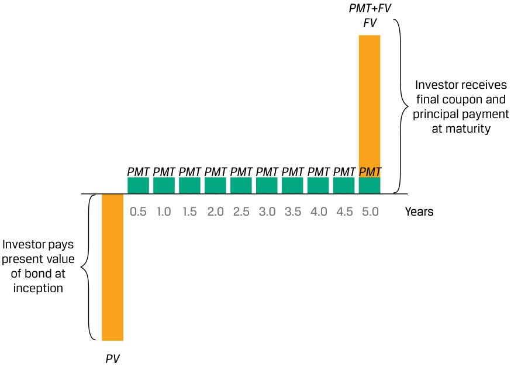
Chú thích hình ảnh: Tại thời điểm khởi đầu, nhà đầu tư trả giá trị hiện tại của trái phiếu ($\text{PV}$). Sau mỗi $0,5$ năm (từ $0,5$ đến $4,5$ năm), nhà đầu tư nhận được khoản tiền lãi coupon định kỳ ($\text{PMT}$). Tại năm $5,0$ (khi đáo hạn), nhà đầu tư nhận được khoản thanh toán coupon cuối cùng và nợ gốc ($\text{PMT} + \text{FV}$).
Pricing a coupon bond extends the single cash flow calculation for a discount bond to a general formula for calculating a bond’s price ( PV ) given the market discount rate on a coupon date, as follows:
Việc định giá một trái phiếu trả lãi định kỳ (coupon bond) mở rộng phép tính dòng tiền đơn lẻ của trái phiếu chiết khấu thành một công thức tổng quát để tính giá trái phiếu ($\text{PV}$) khi biết lãi suất chiết khấu thị trường vào một ngày trả lãi coupon, như sau:
- PV(Coupon Bond)
EXAMPLE 2
VÍ DỤ 2 (EXAMPLE 2)
Hellenic Republic of Greece Annual Coupon Bond
Trái phiếu trả lãi hàng năm của Cộng hòa Hy Lạp (Hellenic Republic of Greece Annual Coupon Bond)
At the height of the COVID pandemic, the government of Greece issued a 2 percent annual coupon bond maturing in seven years.
Vào thời điểm đỉnh dịch COVID, chính phủ Hy Lạp đã phát hành một trái phiếu trả lãi coupon hàng năm $2\%$ có kỳ hạn bảy năm.
- If the observed YTM at issuance was 2.00 percent, what was the issuance price ( PV ) per EUR100 of principal?
- Nếu lợi suất đáo hạn (YTM) quan sát được khi phát hành là $2,00\%$, thì giá phát hành ($\text{PV}$) trên mỗi $100\text{ EUR}$ nợ gốc là bao nhiêu?
Solution:
Lời giải (Solution):
EUR100
$100\text{ EUR}$
Solve for PV using Equation 6 with PMTi = EUR2, r = 2.00%, and FV = EUR100:
Giải tìm $\text{PV}$ bằng cách sử dụng Phương trình 6 với $\text{PMT}_i = 2\text{ EUR}$, $r = 2,00\%$, và $\text{FV} = 100\text{ EUR}$:
PV = EUR100
We may solve this using the Microsoft Excel or Google Sheets PV function introduced earlier ( PV (0.02,7,2,100,0)). The issuance price equals the principal ( PV = FV ). This relationship holds on a coupon date for any bond where the fixed periodic coupon is equal to the discount rate.
Chúng ta có thể giải bài toán này bằng cách sử dụng hàm PV trong Microsoft Excel hoặc Google Sheets đã giới thiệu trước đó (=PV(0.02, 7, 2, 100, 0)). Giá phát hành bằng với nợ gốc ($\text{PV} = \text{FV}$). Mối quan hệ này luôn đúng vào ngày trả lãi coupon đối với bất kỳ trái phiếu nào có lãi suất coupon cố định định kỳ bằng với lãi suất chiết khấu.
The present value of each cash flow may be solved using Equation 5. For example, the final EUR102 interest and principal cash flow in seven years is:
Giá trị hiện tại của từng dòng tiền có thể được giải bằng Phương trình 5. Ví dụ, dòng tiền lãi và gốc cuối cùng trị giá $102\text{ EUR}$ sau bảy năm là:
PV = EUR88.80 = EUR102/(1.02)7 .
The following table shows the present value of all bond cash flows:
Bảng sau đây cho thấy giá trị hiện tại của tất cả các dòng tiền của trái phiếu:
| Years/Periods | 0 | 1 | 2 | 3 | 4 | 5 | 6 | 7 |
|---|---|---|---|---|---|---|---|---|
| FV | 2 | 2 | 2 | 2 | 2 | 2 | 102 | |
| PV | 100.00 | 1.96 | 1.92 | 1.88 | 1.85 | 1.81 | 1.78 | 88.80 |
| Năm/Kỳ (Years/Periods) | 0 | 1 | 2 | 3 | 4 | 5 | 6 | 7 |
|---|---|---|---|---|---|---|---|---|
| FV | 2 | 2 | 2 | 2 | 2 | 2 | 102 | |
| PV | 100,00 | 1,96 | 1,92 | 1,88 | 1,85 | 1,81 | 1,78 | 88,80 |
- Next, let’s assume that, exactly two years later, a sharp rise in Eurozone inflation drove the Greek bond’s price lower to EUR93.091 (per EUR100 of principal). What would be the implied YTM expected by investors under these new market conditions?
- Tiếp theo, giả sử rằng đúng hai năm sau, sự gia tăng mạnh mẽ của lạm phát tại khu vực đồng Euro đã đẩy giá trái phiếu Hy Lạp xuống mức thấp hơn là $93,091\text{ EUR}$ (trên mỗi $100\text{ EUR}$ nợ gốc). Lợi suất đáo hạn (YTM) ngầm định mà các nhà đầu tư kỳ vọng trong những điều kiện thị trường mới này sẽ là bao nhiêu?
Solution:
Lời giải (Solution):
3.532 percent
$3,532\%$
In this case, we must solve for r using Equation 6, with PV equal to 93.091, as follows:
Trong trường hợp này, chúng ta phải giải tìm $r$ bằng cách sử dụng Phương trình 6, với $\text{PV}$ bằng $93,091$, như sau:
Here we may use the Microsoft Excel or Google Sheets RATE function ~~(RATE (5,2,93.091,100,0,0.1)~~ ) to solve for r of 3.532 percent. Investors in fixed coupon bonds face a capital loss when investors expect a higher YTM.
Tại đây chúng ta có thể sử dụng hàm RATE trong Microsoft Excel hoặc Google Sheets (=RATE(5, 2, -93.091, 100, 0, 0.1)) để giải tìm $r$ bằng $3,532\%$. Các nhà đầu tư nắm giữ trái phiếu có lãi suất coupon cố định sẽ phải đối mặt với khoản lỗ vốn (capital loss) khi thị trường kỳ vọng một mức YTM cao hơn.
The interest rate r used to discount all cash flows in Equation 6 is the bond’s YTM, which is typically quoted on an annual basis. However, many bonds issued by public or private borrowers pay interest on a semiannual basis. In Example 3, we revisit the Republic of India bond from which a single cash flow was stripped in an earlier simplified example.
Lãi suất $r$ được sử dụng để chiết khấu tất cả các dòng tiền trong Phương trình 6 là lợi suất đáo hạn (YTM) của trái phiếu, vốn thường được niêm yết trên cơ sở hàng năm. Tuy nhiên, nhiều trái phiếu do các tổ chức vay công hoặc tư phát hành lại trả lãi trên cơ sở nửa năm một lần (semiannual basis). Trong Ví dụ 3, chúng ta xem xét lại trái phiếu Cộng hòa Ấn Độ mà từ đó một dòng tiền đơn lẻ đã được tách ra trong ví dụ đơn giản hóa trước đó.
EXAMPLE 3
VÍ DỤ 3 (EXAMPLE 3)
Republic of India Semiannual Coupon Bond
Trái phiếu trả lãi nửa năm một lần của Cộng hòa Ấn Độ (Republic of India Semiannual Coupon Bond)
Consider the 20-year Republic of India government bond from which the discount bond in Example 1 was separated (or stripped). The bond was issued at an annualized coupon rate of 6.70 percent and a YTM of 6.70 percent, and the coupon payments are semiannual.
Xét trái phiếu chính phủ Cộng hòa Ấn Độ kỳ hạn 20 năm mà từ đó trái phiếu chiết khấu trong Ví dụ 1 đã được tách ra (stripped). Trái phiếu này được phát hành với lãi suất coupon quy đổi theo năm là $6,70\%$ và YTM là $6,70\%$, đồng thời các khoản thanh toán coupon được thực hiện nửa năm một lần.
- Solve for the price of the bond at issuance.
- Giải tìm giá của trái phiếu khi phát hành.
Solution:
Lời giải (Solution):
INR100
$100\text{ INR}$
As coupon periods are semiannual, for a principal of INR100, PMT = INR3.35 (=6.70/2) and the periodic discount rate is 3.35 percent (=6.70 percent/2), as follows:
Vì các kỳ coupon là nửa năm một lần, đối với nợ gốc $100\text{ INR}$, $\text{PMT} = 3,35\text{ INR}$ ($= 6,70 / 2$) và lãi suất chiết khấu định kỳ là $3,35\%$ ($= 6,70\% / 2$), như sau:
PV = 3.35/(1.0335) + 3.35/(1.0335)2 + … + 3.35/(1.0335)39 + 103.35/ (1.0335)40 .
As shown in Example 2, because the coupon rate is equal to the YTM , we expect this bond to have a PV of INR100 at issuance.
Như đã trình bày trong Ví dụ 2, bởi vì lãi suất coupon bằng với YTM, chúng ta kỳ vọng trái phiếu này có $\text{PV}$ bằng $100\text{ INR}$ khi phát hành.
- What is the bond’s price if the YTM immediately rises to 7.70 percent?
- Giá của trái phiếu là bao nhiêu nếu YTM tăng ngay lập tức lên mức $7,70\%$?
Solution:
Lời giải (Solution):
INR89.88
$89,88\text{ INR}$
We can solve for the PV as INR89.88 using Equation 6 with r = 3.85% (=7.70/2) or using the Microsoft Excel or Google Sheets PV function ~~(PV (0.0385,40,3.35,100,0)~~ ). The first and final three cash flows are shown below:
Chúng ta có thể giải tìm $\text{PV}$ bằng $89,88\text{ INR}$ bằng cách sử dụng Phương trình 6 với $r = 3,85\%$ ($= 7,70 / 2$) hoặc sử dụng hàm PV trong Microsoft Excel hoặc Google Sheets (=PV(0.0385, 40, 3.35, 100, 0)). Ba dòng tiền đầu tiên và ba dòng tiền cuối cùng được thể hiện dưới đây:
| Years | 0 | 0.5 | 1 | 1.5 | 19 | 19.5 | 20 | |
|---|---|---|---|---|---|---|---|---|
| r | Periods | 0 | 1 | 2 | 3 | 38 | 39 | 40 |
| FV | 3.35 | 3.35 | 3.35 | 3.35 | 3.35 | 103.35 | ||
| 6.70% | PV | 100.00 | 3.24 | 3.14 | 3.03 | 0.96 | 0.93 | 27.66 |
| 7.70% | PV | 89.88 | 3.23 | 3.11 | 2.99 | 0.80 | 0.77 | 22.81 |
| Năm (Years) | 0 | 0,5 | 1 | 1,5 | 19 | 19,5 | 20 | |
|---|---|---|---|---|---|---|---|---|
| $r$ | Kỳ (Periods) | 0 | 1 | 2 | 3 | 38 | 39 | 40 |
| FV | 3,35 | 3,35 | 3,35 | 3,35 | 3,35 | 103,35 | ||
| 6,70% | PV | 100,00 | 3,24 | 3,14 | 3,03 | 0,96 | 0,93 | 27,66 |
| 7,70% | PV | 89,88 | 3,23 | 3,11 | 2,99 | 0,80 | 0,77 | 22,81 |
- Recalculate the discount bond price for the single principal payment in 20 years from Example 1 , where YTM = 6.70, and discounting is done semiannually.
- Tính lại giá trái phiếu chiết khấu cho khoản thanh toán nợ gốc duy nhất sau 20 năm từ Ví dụ 1, trong đó $\text{YTM} = 6,70\%$, và việc chiết khấu được thực hiện nửa năm một lần.
Solution: INR26.77 Using Equation 5:
Lời giải (Solution):
PV ( FV 40) = INR26.77 = 100 / (1.0335)40 .
$26,77\text{ INR}$
Sử dụng Phương trình 5:
Discounting on a semiannual basis for 40 periods, PV ( FV40 ) of 26.77 is less than the original PV of 27.33 using 20 annual periods from Example 1 (since 1/(1+ r )t > 1/(1+ r /2)2t when r ≥ 0).
Khi chiết khấu trên cơ sở nửa năm một lần cho 40 kỳ, $\text{PV}(\text{FV}_{40})$ bằng $26,77$ nhỏ hơn mức $\text{PV}$ ban đầu là $27,33$ khi sử dụng 20 kỳ hàng năm từ Ví dụ 1 (vì $1/(1 + r)^t > 1/(1 + r/2)^{2t}$ khi $r > 0$).
A perpetual bond is a less common type of coupon bond with no stated maturity date. Most perpetual bonds are issued by companies to obtain equity-like financing and often include redemption features. As N →∞ in Equation 6, we can simplify this to solve for the present value of a perpetuity (or perpetual fixed periodic cash flow without early redemption), where r > 0, as follows:
Trái phiếu vĩnh cửu (perpetual bond) là một loại trái phiếu trả lãi định kỳ ít phổ biến hơn và không có ngày đáo hạn xác định. Hầu hết các trái phiếu vĩnh cửu được các công ty phát hành để huy động nguồn vốn tương tự vốn chủ sở hữu (equity-like financing) và thường bao gồm các đặc tính mua lại (redemption features). Khi $N \to \infty$ trong Phương trình 6, chúng ta có thể rút gọn công thức này để giải tìm giá trị hiện tại của một niên kim vĩnh cửu (perpetuity) (hay dòng tiền định kỳ cố định vĩnh viễn không có quyền mua lại trước hạn), với $r > 0$, như sau:
PV (Perpetual Bond) = PMT / r .
~~(7)~~
(Tiếng Anh: $\text{PV}(\text{Perpetual Bond}) = \text{PMT} / r$)
EXAMPLE 4
VÍ DỤ 4 (EXAMPLE 4)
KB Financial Perpetual Bond
Trái phiếu vĩnh cửu của KB Financial (KB Financial Perpetual Bond)
In 2020, KB Financial (the holding company for Kookmin Bank) issued KRW325 billion in perpetual bonds with a 3.30 percent quarterly coupon.
Vào năm 2020, KB Financial (công ty mẹ của Ngân hàng Kookmin) đã phát hành 325 tỷ KRW trái phiếu vĩnh cửu với lãi suất coupon trả hàng quý là $3,30\%$.
- Calculate the bond’s YTM if the market price was KRW97.03 (per KRW100).
- Tính lợi suất đáo hạn (YTM) của trái phiếu nếu giá thị trường là $97,03\text{ KRW}$ (trên mỗi $100\text{ KRW}$ mệnh giá).
Solution:
Lời giải (Solution):
3.40 percent
$3,40\%$
Solve for r in Equation 7 given a PV of KRW97.03 and a periodic quarterly coupon ( PMT ) of KRW0.825 (= (3.30% × KRW100)/4):
Giải tìm $r$ trong Phương trình 7 khi biết $\text{PV}$ là $97,03\text{ KRW}$ và tiền lãi coupon định kỳ hàng quý ($\text{PMT}$) là $0,825\text{ KRW}$ ($= (3,30\% \times \text{100 KRW}) / 4$):
KRW97.03 = KRW0.825 / r ;
r = 0.85% per period, or 3.40% (=0.85% × 4) on an annualized basis.
Annuity Instruments
Công cụ niên kim (Annuity Instruments)
Examples of fixed-income instruments with level payments, which combine interest and principal cash flows through maturity, include fully amortizing loans such as mortgages and a fixed-income stream of periodic cash inflows over a finite period known as an annuity. Exhibit 3 illustrates an example of level monthly cash flows based upon a mortgage.
Các ví dụ về công cụ thu nhập cố định có các khoản thanh toán đều (level payments), kết hợp cả dòng tiền lãi và gốc cho đến khi đáo hạn, bao gồm các khoản vay trả góp khấu hao hoàn toàn (fully amortizing loans) như khoản vay thế chấp mua nhà (mortgages) và một chuỗi thu nhập cố định gồm các dòng tiền vào định kỳ trong một khoảng thời gian hữu hạn được gọi là niên kim (annuity). Bảng 3 (Exhibit 3) minh họa một ví dụ về các dòng tiền đều hàng tháng dựa trên một khoản vay thế chấp.
Exhibit 3: Mortgage Cash Flows
Bảng 3: Dòng tiền của Khoản vay thế chấp (Exhibit 3: Mortgage Cash Flows)
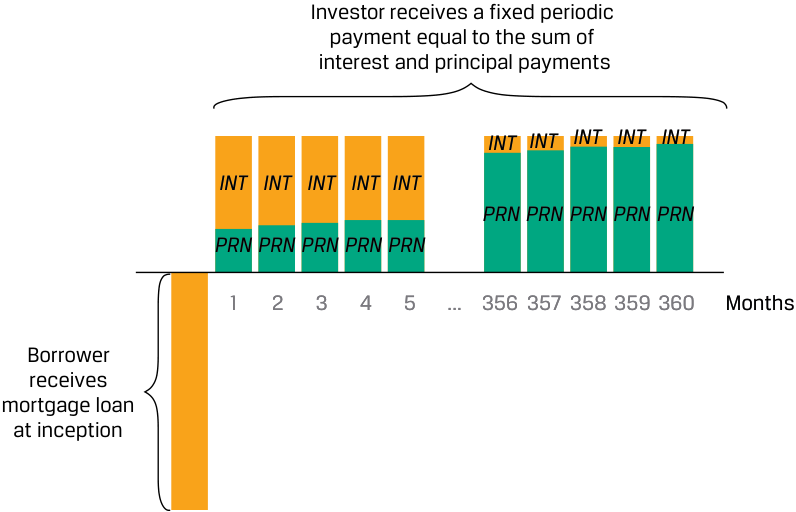
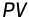
Chú thích hình ảnh: Tại thời điểm khởi đầu, người đi vay nhận khoản vay thế chấp ($\text{PV}$). Qua các tháng từ 1 đến 360, nhà đầu tư (người cho vay) nhận được một khoản thanh toán định kỳ cố định bằng tổng của tiền lãi ($\text{INT}$) và tiền trả nợ gốc ($\text{PRN}$), trong đó tỷ trọng $\text{INT}$ giảm dần và $\text{PRN}$ tăng dần theo thời gian.
We may calculate the periodic annuity cash flow ( A ), which occurs at the end of each respective period, as follows:
Chúng ta có thể tính toán dòng tiền niên kim định kỳ ($A$), phát sinh vào cuối mỗi kỳ tương ứng, như sau:
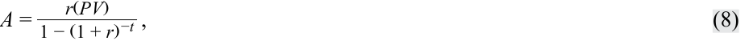
where:
trong đó:
-
A = periodic cash flow,
-
r = market interest rate per period,
-
PV = present value or principal amount of loan or bond, and
-
t = number of payment periods.
-
$A =$ dòng tiền định kỳ (periodic cash flow),
-
$r =$ lãi suất thị trường mỗi kỳ (market interest rate per period),
-
$\text{PV} =$ giá trị hiện tại hoặc số tiền nợ gốc của khoản vay hoặc trái phiếu, và
-
$t =$ số kỳ thanh toán (number of payment periods).
EXAMPLE 5
VÍ DỤ 5 (EXAMPLE 5)
Mortgage Cash Flows
Dòng tiền của Khoản vay thế chấp (Mortgage Cash Flows)
An investor seeks a fixed-rate 30-year mortgage loan to finance 80 percent of the purchase price of USD1,000,000 for a residential building.
Một nhà đầu tư tìm kiếm một khoản vay thế chấp kỳ hạn 30 năm với lãi suất cố định để tài trợ $80\%$ giá mua $1.000.000\text{ USD}$ của một tòa nhà dân cư.
- Calculate the investor’s monthly payment if the annual mortgage rate is 5.25 percent.
- Tính khoản thanh toán hàng tháng của nhà đầu tư nếu lãi suất thế chấp hàng năm là $5,25\%$.
Solution:
Lời giải (Solution):
Solve for A using Equation 8 with r = 0.4375% (= 5.25%/12), t of 360, and PV of USD800,000 (=80% × USD1,000,000):
Giải tìm $A$ bằng cách sử dụng Phương trình 8 với $r = 0,4375\%$ ($= 5,25\% / 12$), $t = 360$, và $\text{PV} = 800.000\text{ USD}$ ($= 80\% \times \text{1.000.000 USD}$):
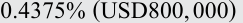
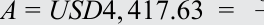
______1 −( 1 + 0.4375%)−360 .
The 360 level monthly payments consist of both principal and interest.
360 khoản thanh toán đều hàng tháng này bao gồm cả nợ gốc và tiền lãi.
- What is the principal amortization and interest breakdown of the first two monthly cash flows?
- Chi tiết phần trả nợ gốc (principal amortization) và tiền lãi của hai dòng tiền hàng tháng đầu tiên là bao nhiêu?
Solution:
Lời giải (Solution):
Month 1 interest is USD3,500 and principal is USD917.63 Month 2 interest is USD3,495.99 and principal is USD921.64
- Tháng 1: tiền lãi là $3.500\text{ USD}$ và tiền trả nợ gốc là $917,63\text{ USD}$
- Tháng 2: tiền lãi là $3.495,99\text{ USD}$ và tiền trả nợ gốc là $921,64\text{ USD}$
Month 1:
Tháng 1:
Interest: USD3,500 = USD800,000 × 0.4375% (= PV0 × r )
Principal Amortization: USD4,417.63 − USD3,500 = USD917.63 Remaining Principal ( PV1 ): USD799,082.37 = USD800,000 − USD917.63
- Tiền lãi: $\text{3.500 USD} = \text{800.000 USD} \times 0,4375\%$ ($= \text{PV}_0 \times r$)
- Phần trả nợ gốc: $\text{4.417,63 USD} - \text{3.500 USD} = \text{917,63 USD}$
- Nợ gốc còn lại ($\text{PV}_1$): $\text{799.082,37 USD} = \text{800.000 USD} - \text{917,63 USD}$
Month 2:
Tháng 2:
Interest: USD3,495.99 = USD799,082.37 × 0.4375% (= PV1 × r ) Principal Amortization: USD4,417.63 − USD3,495.99 = USD921.64 Remaining Principal ( PV2 ): USD798,160.73 = USD799,082.37 − USD921.64
- Tiền lãi: $\text{3.495,99 USD} = \text{799.082,37 USD} \times 0,4375\%$ ($= \text{PV}_1 \times r$)
- Phần trả nợ gốc: $\text{4.417,63 USD} - \text{3.495,99 USD} = \text{921,64 USD}$
- Nợ gốc còn lại ($\text{PV}_2$): $\text{798.160,73 USD} = \text{799.082,37 USD} - \text{921,64 USD}$
Although the periodic mortgage payment is constant, the proportion of interest per payment declines while the principal amortization rises over
Mặc dù khoản thanh toán thế chấp định kỳ là không đổi, tỷ trọng tiền lãi trong mỗi lần thanh toán giảm dần trong khi phần trả nợ gốc tăng dần theo
time. The following spreadsheet shows the first and final three monthly cash flows.
thời gian. Bảng tính sau đây cho thấy ba dòng tiền hàng tháng đầu tiên và ba dòng tiền hàng tháng cuối cùng.
| Month | Total Monthly Payment |
Monthly Inter- est Payment |
Monthly Principal Repayment |
Remaining Principal |
|---|---|---|---|---|
| 1 | $ 4,417.63|$ 3,500.00 | $ 917.63|$ 799,082.37 | ||
| 2 | $ 4,417.63|$ 3,495.99 | $ 921.64|$ 798,160.73 | ||
| 3 | $ 4,417.63|$ 3,491.95 | $ 925.68|$ 797,235.05 | ||
| … | ||||
| 358 | $ 4,417.63|$ 57.48 | $ 4,360.15|$ 8,777.61 | ||
| 359 | $ 4,417.63|$ 38.40 | $ 4,379.23|$ 4,398.39 | ||
| 360 | $ 4,417.63|$ 19.24 | $ 4,398.39|$ 0.00 |
| Tháng (Month) | Tổng khoản thanh toán hàng tháng (Total Monthly Payment) | Thanh toán tiền lãi hàng tháng (Monthly Interest Payment) | Hoàn trả nợ gốc hàng tháng (Monthly Principal Repayment) | Nợ gốc còn lại (Remaining Principal) |
|---|---|---|---|---|
| 1 | $ 4.417,63|$ 3.500,00 | $ 917,63|$ 799.082,37 | ||
| 2 | $ 4.417,63|$ 3.495,99 | $ 921,64|$ 798.160,73 | ||
| 3 | $ 4.417,63|$ 3.491,95 | $ 925,68|$ 797.235,05 | ||
| … | ||||
| 358 | $ 4.417,63|$ 57,48 | $ 4.360,15|$ 8.777,61 | ||
| 359 | $ 4.417,63|$ 38,40 | $ 4.379,23|$ 4.398,39 | ||
| 360 | $ 4.417,63|$ 19,24 | $ 4.398,39|$ 0,00 |
Equity Instruments and the Time Value of Money
Các Công cụ Vốn chủ sở hữu và Giá trị Thời gian của Tiền (Equity Instruments and the Time Value of Money)
Equity investments, such as preferred or common stock, represent ownership shares in a company which entitle investors to receive any discretionary cash flows in the form of dividends. Unlike fixed-income instruments, equity investments have no maturity date and are assumed to remain outstanding indefinitely, or until a company is sold, restructured, or liquidated. One way to value a company’s shares is by discounting expected future cash flows using an expected rate of return ( r ). These cash flows include any periodic dividends received plus the expected price received at the end of an investment horizon.
Các khoản đầu tư vốn chủ sở hữu (equity investments), chẳng hạn như cổ phiếu ưu đãi (preferred stock) hoặc cổ phiếu phổ thông (common stock), đại diện cho các cổ phần sở hữu trong một công ty, trao quyền cho các nhà đầu tư được nhận bất kỳ dòng tiền tùy ý nào dưới hình thức cổ tức (dividends). Khác với các công cụ thu nhập cố định, các khoản đầu tư vốn chủ sở hữu không có ngày đáo hạn và được giả định là sẽ lưu hành vô thời hạn, hoặc cho đến khi công ty được bán, tái cơ cấu hoặc thanh lý. Một cách để định giá cổ phiếu của một công ty là chiết khấu các dòng tiền dự kiến trong tương lai bằng một mức tỷ suất sinh lợi kỳ vọng ($r$). Các dòng tiền này bao gồm bất kỳ khoản cổ tức định kỳ nào nhận được cộng với mức giá dự kiến nhận được vào cuối khung thời gian đầu tư.
Common assumptions associated with valuing equity instruments based upon dividend cash flows often follow one of three general approaches:
Các giả định phổ biến gắn liền với việc định giá các công cụ vốn chủ sở hữu dựa trên dòng tiền cổ tức thường tuân theo một trong ba phương pháp tiếp cận tổng quát sau:
-
Constant Dividends: An investor pays an initial price ( PV ) for a preferred or common share of stock and receives a fixed periodic dividend ( D ).
-
Constant Dividend Growth Rate: An investor pays an initial price ( PV ) for a share of stock and receives an initial dividend in one period ( Dt+1 ), which is expected to grow over time at a constant rate of g .
-
Changing Dividend Growth Rate: An investor pays an initial price ( PV ) for a share of stock and receives an initial dividend in one period ( Dt+1 ). The dividend is expected to grow at a rate that changes over time as a company moves from an initial period of high growth to slower growth as it reaches maturity.
-
Cổ tức không đổi (Constant Dividends): Nhà đầu tư trả một mức giá ban đầu ($\text{PV}$) cho một cổ phiếu ưu đãi hoặc cổ phiếu phổ thông và nhận được một khoản cổ tức định kỳ cố định ($D$).
-
Tốc độ tăng trưởng cổ tức không đổi (Constant Dividend Growth Rate): Nhà đầu tư trả một mức giá ban đầu ($\text{PV}$) cho một cổ phiếu và nhận được khoản cổ tức ban đầu sau một kỳ ($D_{t+1}$), khoản cổ tức này được kỳ vọng sẽ tăng trưởng theo thời gian với tốc độ không đổi là $g$.
-
Tốc độ tăng trưởng cổ tức thay đổi (Changing Dividend Growth Rate): Nhà đầu tư trả một mức giá ban đầu ($\text{PV}$) cho một cổ phiếu và nhận được khoản cổ tức ban đầu sau một kỳ ($D_{t+1}$). Cổ tức được kỳ vọng sẽ tăng trưởng với tốc độ thay đổi theo thời gian khi công ty chuyển từ giai đoạn tăng trưởng cao ban đầu sang tăng trưởng chậm hơn khi đạt đến độ trưởng thành (maturity).
The simplest case of a stock that is assumed to pay constant dividends in perpetuity is shown in Exhibit 4.
Trường hợp đơn giản nhất của một cổ phiếu được giả định trả cổ tức không đổi đến vĩnh viễn được thể hiện trong Bảng 4 (Exhibit 4).
Exhibit 4: Equity Cash Flows with Constant Dividends
Bảng 4: Dòng tiền Vốn chủ sở hữu với Cổ tức không đổi (Exhibit 4: Equity Cash Flows with Constant Dividends)
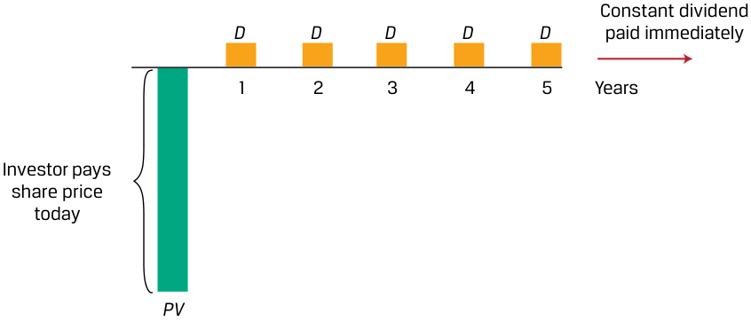
Chú thích hình ảnh: Nhà đầu tư trả giá cổ phiếu ngày hôm nay ($\text{PV}$) và nhận được khoản cổ tức không đổi ($D$) định kỳ qua các năm $1, 2, 3, 4, 5, \dots$ kéo dài vô thời hạn (indefinitely).
The price of a preferred or common share expected to pay a constant periodic dividend is an infinite series that simplifies to the formula for the present value of a perpetuity shown and is similar to the valuation of a perpetual bond that we encountered earlier. Specifically, the valuation in Equation 7:
Giá của một cổ phiếu ưu đãi hoặc cổ phiếu phổ thông dự kiến trả một khoản cổ tức định kỳ không đổi là một chuỗi vô hạn được rút gọn về công thức tính giá trị hiện tại của một niên kim vĩnh cửu như dưới đây và tương tự như việc định giá một trái phiếu vĩnh cửu mà chúng ta đã gặp trước đó. Cụ thể, cách định giá tương tự Phương trình 7:
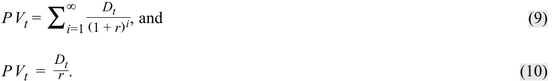
và
EXAMPLE 6
VÍ DỤ 6 (EXAMPLE 6)
Constant Dividend Cash Flows
Dòng tiền Cổ tức không đổi (Constant Dividend Cash Flows)
Shipline PLC is a company that pays regular dividends of GBP1.50 per year, which are expected to continue indefinitely.
Shipline PLC là một công ty trả cổ tức đều đặn ở mức $1,50\text{ GBP}$ mỗi năm, được kỳ vọng sẽ tiếp tục duy trì vô thời hạn.
- What is Shipline’s expected stock price if shareholders’ required rate of return is 15 percent?
- Giá cổ phiếu dự kiến của Shipline là bao nhiêu nếu tỷ suất sinh lợi yêu cầu của các cổ đông là $15\%$?
Solution:
Lời giải (Solution):
- GBP10
- $10\text{ GBP}$
Solve for PV using Equation 10, where D is GBP1.50 and the rate of return per period r is 15 percent:
Giải tìm $\text{PV}$ bằng cách sử dụng Phương trình 10, trong đó $D$ là $1,50\text{ GBP}$ và tỷ suất sinh lợi mỗi kỳ $r$ là $15\%$:
PV = GBP10.00 = GBP1.50/0.15.
Alternatively, a common equity forecasting approach is to assume a constant dividend growth rate ( g ) into perpetuity, as illustrated in Exhibit 5.
Ngoài ra, một phương pháp dự báo vốn chủ sở hữu phổ biến là giả định tốc độ tăng trưởng cổ tức không đổi ($g$) đến vĩnh viễn, như được minh họa trong Bảng 5 (Exhibit 5).
Exhibit 5: Equity Cash Flows with Constant Dividend Growth
Bảng 5: Dòng tiền Vốn chủ sở hữu với Tăng trưởng Cổ tức không đổi (Exhibit 5: Equity Cash Flows with Constant Dividend Growth)
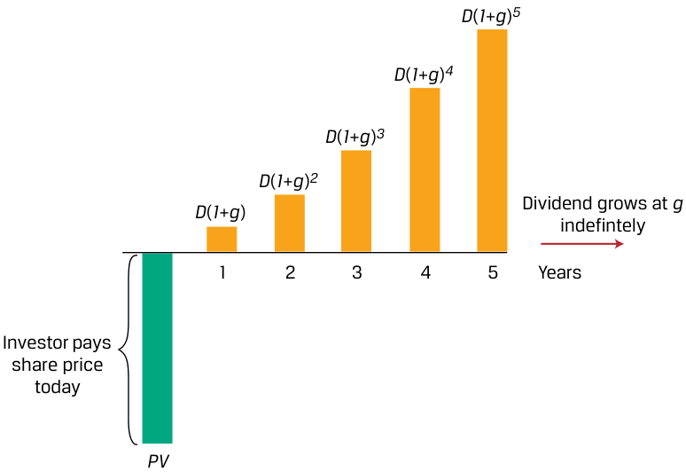
Chú thích hình ảnh: Nhà đầu tư trả giá cổ phiếu ngày hôm nay ($\text{PV}$) và nhận cổ tức tăng trưởng với tốc độ $g$ vô thời hạn: Năm 1 là $D(1+g)$, Năm 2 là $D(1+g)^2$, Năm 3 là $D(1+g)^3$, Năm 4 là $D(1+g)^4$, Năm 5 là $D(1+g)^5, \dots$
If dividends grow at a rate of g per period and are paid at the end of each period, the next dividend (at time t + 1) may be shown as follows:
Nếu cổ tức tăng trưởng với tốc độ $g$ mỗi kỳ và được thanh toán vào cuối mỗi kỳ, thì khoản cổ tức tiếp theo (tại thời điểm $t + 1$) có thể được biểu diễn như sau:
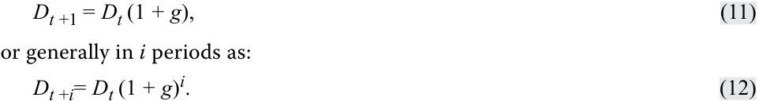
If dividend cash flows continue to grow at g indefinitely, then we may rewrite Equation 10 as follows:
hoặc tổng quát sau $i$ kỳ là:
Nếu các dòng tiền cổ tức tiếp tục tăng trưởng ở mức $g$ vô thời hạn, thì chúng ta có thể viết lại Phương trình 10 như sau:
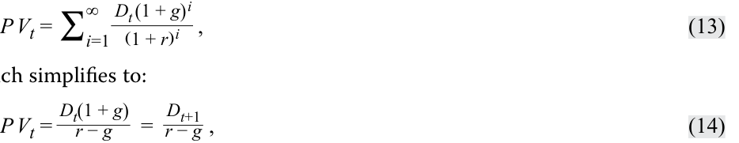
which simplifies to:
where r – g > 0.
được rút gọn thành:
trong đó $r - g > 0$.
An alternative to constant dividend growth is an assumption of changing growth. This is common for evaluating the share price of firms expected to experience an initial rapid rise in cash flow, followed by slower growth as a company matures. The simplest form of changing dividend growth is the two-stage model shown in Exhibit 6.
Một phương án thay thế cho tăng trưởng cổ tức không đổi là giả định tốc độ tăng trưởng thay đổi (changing growth). Giả định này rất phổ biến khi đánh giá giá cổ phiếu của các doanh nghiệp dự kiến sẽ trải qua sự gia tăng dòng tiền nhanh chóng ban đầu, theo sau là mức tăng trưởng chậm hơn khi công ty trưởng thành. Dạng đơn giản nhất của tăng trưởng cổ tức thay đổi là mô hình hai giai đoạn (two-stage model) được thể hiện trong Bảng 6 (Exhibit 6).
Exhibit 6: Equity Cash Flows with Two-Stage Dividend Growth
Bảng 6: Dòng tiền Vốn chủ sở hữu với Tăng trưởng Cổ tức Hai giai đoạn (Exhibit 6: Equity Cash Flows with Two-Stage Dividend Growth)
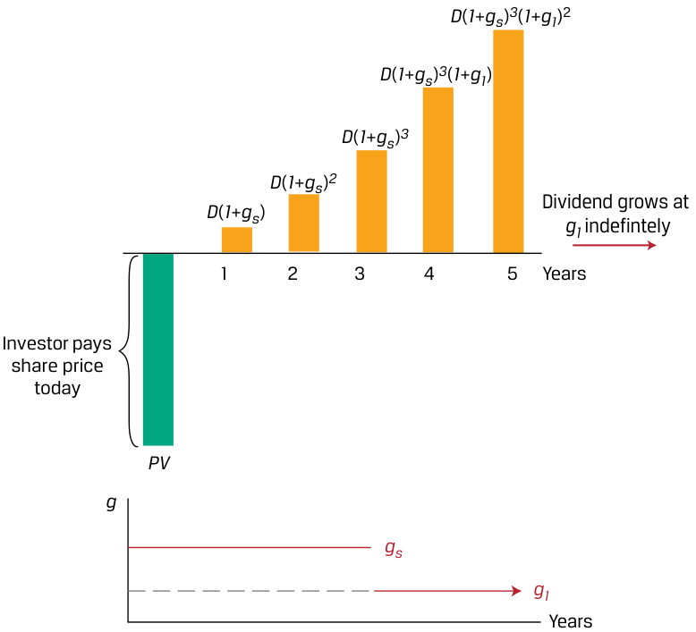
Chú thích hình ảnh: Nhà đầu tư trả giá cổ phiếu ngày hôm nay ($\text{PV}$). Trong 3 năm đầu, cổ tức tăng trưởng ở mức cao ngắn hạn $g_s$: $D(1+g_s)$, $D(1+g_s)^2$, $D(1+g_s)^3$. Từ năm thứ 4 trở đi, cổ tức tăng trưởng ở mức dài hạn $g_l$ vô thời hạn: $D(1+g_s)^3(1+g_l)$, $D(1+g_s)^3(1+g_l)^2, \dots$
The example in Exhibit 6 shows a company with an initial higher short-term dividend growth of gs for the first three years, followed by lower long-term growth ( gl , where gs > gl ) indefinitely thereafter. If we generalize the initial growth phase to n periods followed by indefinite slower growth at gl , we obtain a modified version of Equation 14 as follows:
Ví dụ trong Bảng 6 cho thấy một công ty có mức tăng trưởng cổ tức ngắn hạn ban đầu cao hơn là $g_s$ trong ba năm đầu tiên, theo sau là mức tăng trưởng dài hạn thấp hơn ($g_l$, với $g_s > g_l$) vô thời hạn kể từ đó trở đi. Nếu chúng ta tổng quát hóa giai đoạn tăng trưởng ban đầu thành $n$ kỳ, theo sau là giai đoạn tăng trưởng chậm hơn vô thời hạn ở mức $g_l$, chúng ta thu được một phiên bản điều chỉnh của Phương trình 14 như sau:
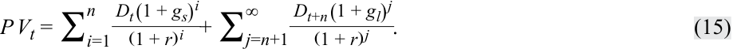
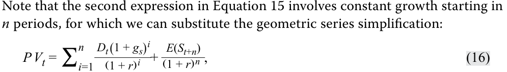
where the stock value of the stock in n periods ( E ( St + n ) is referred to as the terminal value ) and is equal to the following:
Lưu ý rằng biểu thức thứ hai trong Phương trình 15 liên quan đến sự tăng trưởng không đổi bắt đầu sau $n$ kỳ, do đó chúng ta có thể thay thế bằng công thức rút gọn cấp số nhân như sau:
trong đó giá trị của cổ phiếu sau $n$ kỳ ($E(S_{t+n})$ được gọi là giá trị cuối kỳ (terminal value)) và bằng với công thức sau:
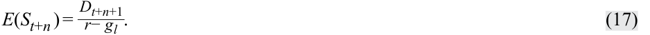
We revisit the Shipline PLC stock price example to evaluate the effects of constant dividend, constant dividend growth and changing dividend growth assumptions on a company’s expected share price.
Chúng ta xem xét lại ví dụ về giá cổ phiếu của Shipline PLC để đánh giá tác động của các giả định cổ tức không đổi, tăng trưởng cổ tức không đổi và tăng trưởng cổ tức thay đổi đối với giá cổ phiếu dự kiến của một công ty.
EXAMPLE 7
VÍ DỤ 7 (EXAMPLE 7)
Constant and Changing Dividend Growth
Tăng trưởng Cổ tức không đổi và Tăng trưởng Cổ tức thay đổi (Constant and Changing Dividend Growth)
Recall that based on a constant GBP1.50 annual dividend and required return of 15 percent, we showed Shipline PLC’s expected stock price to be GBP10.00. Suppose instead that an investment analyst assumes that Shipline will grow its annual dividend by 6 percent per year indefinitely.
Hãy nhớ lại rằng dựa trên mức cổ tức hàng năm không đổi là $1,50\text{ GBP}$ và tỷ suất sinh lợi yêu cầu là $15\%$, chúng ta đã chỉ ra rằng giá cổ phiếu dự kiến của Shipline PLC là $10,00\text{ GBP}$. Thay vào đó, giả sử một nhà phân tích đầu tư giả định rằng Shipline sẽ tăng cổ tức hàng năm ở mức $6\%$ mỗi năm vô thời hạn.
- How does Shipline’s expected share price change under the analyst’s constant growth assumption? Solution:
- Giá cổ phiếu dự kiến của Shipline thay đổi như thế nào dưới giả định tăng trưởng không đổi của nhà phân tích?
GBP17.67
Lời giải (Solution):
Using Equation 14, solve for PV using Dt+1 of GBP1.59 (=GBP1.50 × (1 + 0.06)), r of 15%, and g of 6%:
$17,67\text{ GBP}$
PV = GBP1.59 / (15% − 6%) = GBP17.67.
Sử dụng Phương trình 14, giải tìm $\text{PV}$ với $D_{t+1} = 1,59\text{ GBP}$ ($= \text{1,50 GBP} \times (1 + 0,06)$), $r = 15\%$, và $g = 6\%$:
Note that a higher growth rate g increases the PV by reducing the denominator ( r − g ).
Lưu ý rằng tốc độ tăng trưởng $g$ cao hơn sẽ làm tăng $\text{PV}$ bằng cách làm giảm mẫu số ($r - g$).
- How does Shipline’s expected share price change if we assume instead an initial dividend growth of 6 percent over a three-year period followed by constant 2 percent dividend growth thereafter?
- Giá cổ phiếu dự kiến của Shipline thay đổi như thế nào nếu thay vào đó chúng ta giả định mức tăng trưởng cổ tức ban đầu là $6\%$ trong giai đoạn ba năm, theo sau là mức tăng trưởng cổ tức không đổi $2\%$ kể từ đó trở đi?
Solution:
Lời giải (Solution):
GBP13.05
$13,05\text{ GBP}$
We may solve for Shipline’s expected share price ( PV ) using Equation 15– Equation 17 and Dt = 1.5, gs = 6%, n = 3, r = 15%, and gl = 2%, as follows:
Chúng ta có thể giải tìm giá cổ phiếu dự kiến ($\text{PV}$) của Shipline bằng cách sử dụng các Phương trình 15–17 với $D_t = 1,50$, $g_s = 6\%$, $n = 3$, $r = 15\%$, và $g_l = 2\%$, như sau:
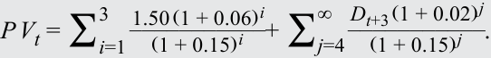
As a first step, we calculate the present value of dividends associated with the higher 6 percent growth rate over the first three years as shown in the first expression. As a second step, we calculate the present value of future dividends at a lower 2 percent growth rate for an indefinite period. The sum of these two steps is the expected share price.
Ở bước đầu tiên, chúng ta tính giá trị hiện tại của các khoản cổ tức gắn với tốc độ tăng trưởng cao hơn ($6\%$) trong ba năm đầu tiên như được thể hiện ở biểu thức thứ nhất. Ở bước thứ hai, chúng ta tính giá trị hiện tại của các khoản cổ tức tương lai ở tốc độ tăng trưởng thấp hơn ($2\%$) cho một giai đoạn vô thời hạn. Tổng của hai bước này chính là giá cổ phiếu dự kiến.
Step 1 Solve for the first step as GBP3.832 with dividend cash flows for the initial growth period as shown in the following spreadsheet:
- Bước 1: Giải bước đầu tiên thu được $3,832\text{ GBP}$ với các dòng tiền cổ tức cho giai đoạn tăng trưởng ban đầu như được thể hiện trong bảng tính sau:
| t | D | PV(D) at**r% ** |
|---|---|---|
| 0 | 1.500 | |
| 1 | 1.590 | 1.383 |
| 2 | 1.685 | 1.274 |
| 3 | 1.787 | 1.175 |
| PV(ST growth) | 3.832 |
| $t$ | $D$ | $\text{PV}(D)$ tại mức $r\%$ |
|---|---|---|
| 0 | 1,500 | |
| 1 | 1,590 | 1,383 |
| 2 | 1,685 | 1,274 |
| 3 | 1,787 | 1,175 |
| $\text{PV}(\text{tăng trưởng ngắn hạn})$ | 3,832 |
Step 2 As shown in Equation 17, the second expression simplifies as follows: ( 1 + _E ( Sr 4) )3; withE(S_4 ) = r − D 4 gl.
- Bước 2: Như đã trình bày trong Phương trình 16 và 17, biểu thức thứ hai được rút gọn như sau:
(Lưu ý: Bản gốc ký hiệu giá trị cuối kỳ tại $t=3$ là $E(S_4)$ nhưng chiết khấu 3 kỳ $(1+r)^3$ dựa trên cổ tức $D_4$).
We may solve for D4 as GBP1.823 (=1.787 × 1.02 = D3 (1 + gl )) and the second expression to be GBP9.22 as follows:
Chúng ta có thể giải tìm $D_4$ bằng $1,823\text{ GBP}$ ($= 1,787 \times 1,02 = D_3(1 + g_l)$) và giá trị của biểu thức thứ hai là $9,22\text{ GBP}$ như sau:
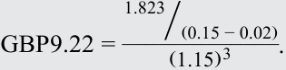
Step 3 The sum of these two steps gives us an expected Shipline share price of GBP13.05 (=3.83 + 9.22).
- Bước 3: Tổng của hai bước này mang lại cho chúng ta mức giá cổ phiếu dự kiến của Shipline là $13,05\text{ GBP}$ ($= 3,83 + 9,22$).
In the following table, we show the sensitivity of Shipline’s expected share price ( PV ) to changes in the long-term growth rate ( gl ) after three years of 6 percent dividend growth:
Trong bảng tiếp theo (ở đầu Phần 2/4), chúng tôi trình bày độ nhạy của giá cổ phiếu dự kiến ($\text{PV}$) của Shipline trước những thay đổi trong tốc độ tăng trưởng dài hạn ($g_l$) sau ba năm tăng trưởng cổ tức ở mức $6\%$: